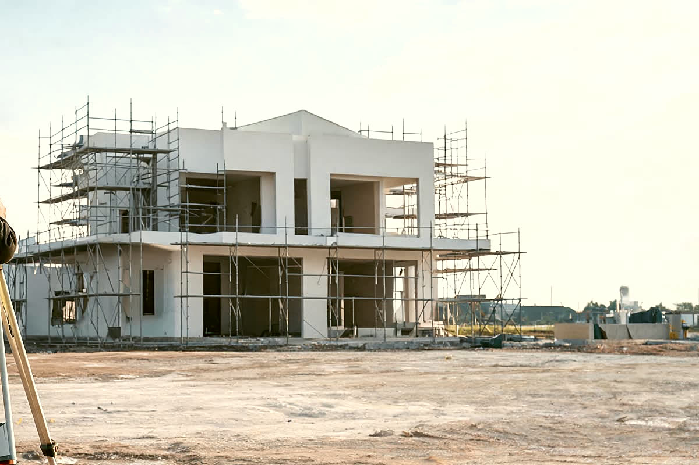

บริการของเรา
รับงานเป็นระบบ ไม่ใช่รับงานเป็นครั้ง
งานรังวัดโดยช่างรังวัดเอกชนใบอนุญาต 351 · ตรวจสอบข้อมูลเอกสารสิทธิ์และสภาพแปลง · ฝากขาย · ประสานงานวันโอน · และบริการหลังซื้อที่ดิน
รับงานเป็นระบบ
ไม่ใช่รับงานเป็นครั้ง
งานที่ดินมีรายละเอียดทางกฎหมายและเอกสารจำนวนมาก เราจึงวางกระบวนการให้เจ้าของที่ดินตรวจสอบได้ทุกขั้น
One Stop Service
ฝากขาย ตรวจกรรมสิทธิ์ รังวัด ยื่นจัดสรร และประสานงานโอน จบในบริษัทเดียว
สัญญาว่าจ้างชัดเจน
ระบุขอบเขตงาน ค่าบริการ และระยะเวลาเป็นลายลักษณ์อักษรก่อนเริ่มงาน
รายงานผลการรังวัด
ส่งรูปแปลง ค่าพิกัด เนื้อที่ และรูปแผนที่ให้เก็บเป็นหลักฐาน
ดูแลหลังการรังวัด
ปรึกษาเรื่องหลักเขต ข้อพิพาทแนวเขต และแนวทางไกล่เกลี่ยกับที่ดินข้างเคียง
ซื้อที่ดินจบแล้ว งานที่เหลือเราต่อให้ได้ทั้งเส้น
เว็บประกาศทั่วไปจบที่ “ติดต่อผู้ขาย” — แต่หลังจากนั้นยังมีโอนกรรมสิทธิ์ ขออนุญาตก่อสร้าง และหาผู้รับเหมา ซึ่งคนซื้อที่ดินครั้งแรกต้องไปหาเองทีละเจ้า ที่ดินชัวร์ให้คุณติ๊กบอกไว้ตั้งแต่วันแรกว่าอยากให้ดูแลอะไรต่อ แล้วทีมงานจะจัดคนที่รับงานนั้นได้จริงมาคุยกับคุณ — ยังไม่ต้องมีแปลงในใจก็บอกไว้ได้
รู้ทุกขั้นว่าเกิดอะไรขึ้น
กับที่ดินของคุณ
การรังวัดโดยช่างรังวัดเอกชนทำได้เฉพาะที่ดินที่มีโฉนดแล้ว เราตรวจเอกสารให้ก่อนเสมอ แล้วบอกตรง ๆ ว่างานทำได้หรือไม่ได้

ส่งข้อมูลแปลงที่ดิน
ส่งเลขโฉนด ตำแหน่งที่ตั้ง และความต้องการ ขาย ฝากเช่า หรือรังวัด ผ่านไลน์หรือโทรศัพท์
ตรวจสอบเอกสารสิทธิ์
ตรวจประเภทเอกสารสิทธิ์ ภาระผูกพัน ทางเข้า–ออก และข้อจำกัดผังเมือง แจ้งผลเป็นลายลักษณ์อักษร
ประเมินราคาและลงประกาศ
เทียบราคาซื้อขายในพื้นที่และราคาประเมินราชการ ขึ้นประกาศเมื่อเจ้าของยินยอมแล้วเท่านั้น
รังวัดและยืนยันแนวเขต
นัดคิวสำนักงานที่ดิน ลงพื้นที่รังวัดสอบเขตหรือแบ่งแยก พร้อมแจ้งเจ้าของที่ดินข้างเคียงตามระเบียบ
ส่งรายงานและโอนกรรมสิทธิ์
ส่งรายงานผลรังวัดพร้อมรูปแผนที่ และประสานงานวันโอนที่สำนักงานที่ดินให้ทั้งสองฝ่าย
เอ็นเจ ทำงานยังไง ดูจบใน 1 คลิป
เราไม่ใช่เว็บรวมประกาศ และไม่ใช่นายหน้าที่รับประกาศต่อ — ทีมงานเป็นช่างรังวัดเอกชน ที่มีใบอนุญาตตามกฎหมาย ทุกแปลงจึงบอกไว้ชัดว่าตรวจถึงระดับไหนแล้ว และตรวจเมื่อไหร่
- บอกระดับที่ตรวจแล้วทุกแปลงแปลงที่รังวัดแล้วจะแสดงแนวเขตและเนื้อที่จริง ไม่ใช่ตัวเลขที่คัดลอกจากหน้าโฉนด
- ติดตามงานออนไลน์ทุกขั้นตั้งแต่วันยื่นเรื่องถึงวันโอน รู้คิวและวันนัดตลอดทาง
- ตรวจให้ก่อนตัดสินใจซื้อแนวเขต ทางเข้าออก ผังเมือง และค่าใช้จ่ายวันโอน
รู้ให้ครบก่อนจ่ายเงิน
ว่าแปลงนั้นมีอะไรซ่อนอยู่
ติดจำนองอยู่รึเปล่า อยู่ในผังเมืองที่สร้างไม่ได้ไหม มีทางเข้าออกจริงมั้ย — คำถามพวกนี้ควรได้คำตอบตั้งแต่ก่อนวางมัดจำ ไม่ใช่หลังโอน
- ข้อมูลโฉนดประเภทเอกสารสิทธิ์และเนื้อที่ตามที่ระบุในเอกสาร
- ผังเมืองและภาระผูกพันผังสีของแปลง และประเด็นที่ควรตรวจเพิ่มก่อนตัดสินใจ
- ทางเข้าออกแปลงติดถนนจริงไหม เข้าออกทางไหนได้บ้าง